18. Stream Routing#
Course Website
Readings#
Videos#
Outline#
What is Level Pool Routing applied to a stream reach?
Example of Level Pool Routing in a stream
Muskingum Routing Background Chow, V.T., Maidment,D.M., and Mays, L.W. (1998) Applied Hydrology, McGraw Hill, pp. 257-260
Muskingum-Cunge Routing applied to a stream reach Chow, V.T., Maidment,D.M., and Mays, L.W. (1998) Applied Hydrology, McGraw Hill, pp. 302-304
What is Level Pool Routing applied to a stream reach?#
Level Pool Routing applied to a stream reach is a hydrologic technique used to estimate how a flood wave or flow pulse travels through a reach of a stream, treating the reach as if it behaves like a reservoir or a level pool. In this method, the storage in the stream reach is assumed to be a function of the water surface elevation, which is relatively constant across the reach at any given time, akin to the behavior of a reservoir.
The technique is based on the principle of mass conservation, described by the continuity equation:
\(\Delta S = I - O\)
Where:
\(\Delta S\) is the change in storage,
\(I\) is the inflow, and
\(O\) is the outflow.
In Level Pool Routing, the storage-outflow relationship is crucial, as it relates the storage in the reach to the outflow, often using a known empirical or analytical function derived from observations or topographic data. The method solves for the change in storage and computes the outflow from the reach at each time step, typically using iterative methods or graphical solutions.
Key Assumptions in Level Pool Routing for a Stream Reach:
Uniform Water Surface Elevation: The water surface elevation across the stream reach is assumed to remain level, meaning that storage is dependent only on the depth of water in the reach, not the slope.
Quasi-Steady Flow Conditions: This method assumes steady flow within each time increment (…a sequence of steady states), focusing on the cumulative inflow and outflow over time.
Simplified Geometry: The stream reach is treated as having simplified geometry, often approximating a reservoir-like behavior, even though the reach may have some slope and varying channel shapes.
Application in Hydrologic Modeling:
Flood Routing: Level pool routing is commonly used for flood routing when water storage effects dominate (such as wide floodplains or slow-moving rivers).
Dam Breach Modeling: It is also frequently applied in scenarios where the stream behaves similarly to a reservoir, such as when simulating the routing of a dam breach flood wave through a downstream reach.
Though Level Pool Routing is an approximation, it provides a simple and effective way to model stream reaches where the water movement is slow, and storage is a key factor in determining flow characteristics downstream.
The method is also known by the names Puls Routing, Modified Puls Routing, and/or Storage-Indication Method. It is typically used for rivers or streams with significant storage effects (e.g., where floodplains or reservoirs influence flow). This method is common in hydrologic models that simulate unsteady flow, such as during flood events, providing estimates of stream discharge at various points downstream.
Stream Routing#
Using the same development as reservoir routing, time averaged values are taken at the beginning and end of a useful time interval, and the first-order difference quotient is used to approximate the rate of change in storage.
The reach mass balance is then
A stream may be comprised of many reaches, each treated as a reservoir-type element.
Stream-reach hydraulics, and depth-area-storage are used to build a storage-outflow function
Once we have that function, then build an auxiliary function (tabulation) called the storage-indication curve (function)
where \(g\) is some function.
Once have the storage-indication curve then can use the reach mass balance to estimate the numerical value of :
Then use the storage-indication curve to find the value of outflow, subtract that from the result above, and now have both the end-of-interval outflow and storage.
Prism and Wedge Storage#
A channel reach diagram is shown below, In Level Pool Routing the wedge storage is zero, X=0
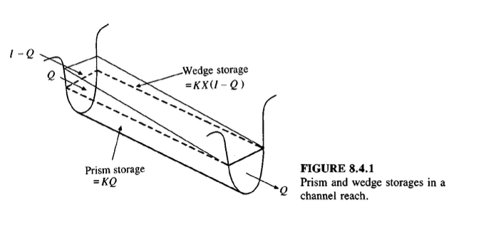
Note
The Muskingum-Cunge Routing method relaxes the constraint on X and provides ways to estimate its value so that wedge storage can be modeled.
The storage in a reach can be estimated as the product of the average cross sectional area for a given discharge rate and the reach length. (This preserves the level pool assumption)
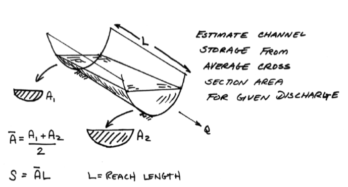
Approximating Ratings#
A rating equation is prescribed at each cross section to determine the cross section areas for particular flow rates.
A simple approximation to construct ratings from cross section geometry is to assume normal flow in the channel, while not strictly correct it is a useful approximation
\(Q = \frac{1.49}{n} \times A R^{2/3} S_0^{1/2}\)
Use cross section geometry to find values for \(A\), and \(R\).
Note
The Manning’s equation above is for US Customary system, for SI system the 1.49 is replaced with 1.0.
Engineered cross sections almost exclusively use just a handful of convenient geometry (rectangular, trapezoidal, triangular, and circular).
Natural cross sections are handled in similar fashion as engineered, except numerical integration is used for the depth-area, topwidth-area, and perimeter-area computations. In many instances a parabolic cross section is a decent natural channel approximation.
Cross Section Geometries#
Some common cross sections that can be used are the mighty wrecked angle.
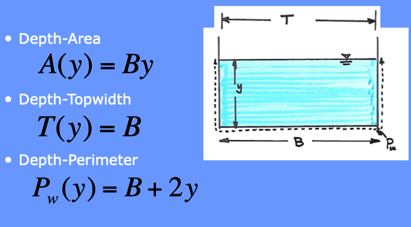
Another common shape is a Trapezoidal channel.
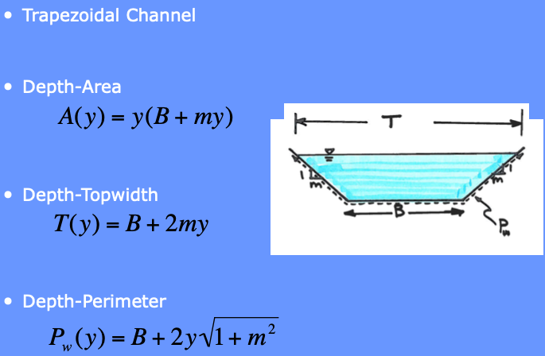
Various Triangles are special cases of a generic trapezoid. These are tyopically called triangular swales and are easily created by a road grader or a buldozer. Its also possible to construct with a box grader, but takes a somewhat skilled operater to do so. (The road grader and buldozer takes skill too - the point is these are reasonably common constructed shapes)
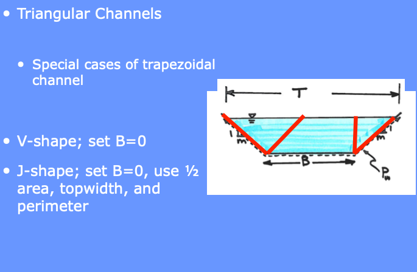
The other common engineered shape is the circle, normally laid into a trench, then backfilled.
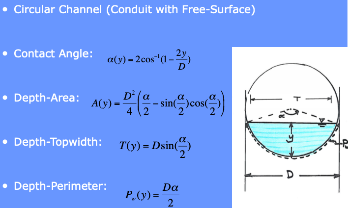
Irregular cross-sections are a bit more involved, but the general idea is the same as above shapes:
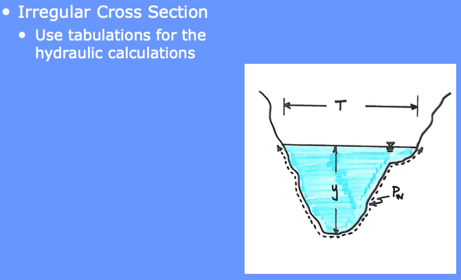
The designer will need to construct a depth-area table (or use software to do so) for each cross section
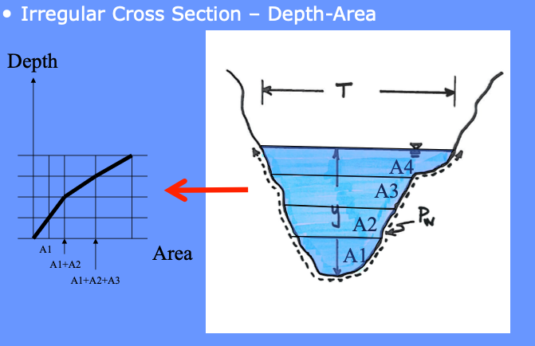
The designer will need to construct a depth-topwidth table (or use software to do so) for each cross section
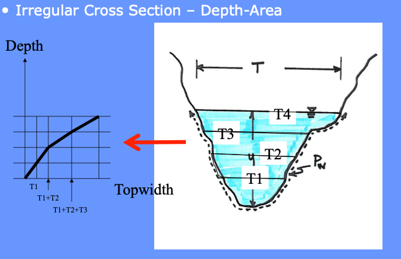
The designer will need to construct a depth-perimeter table (or use software to do so) for each cross section
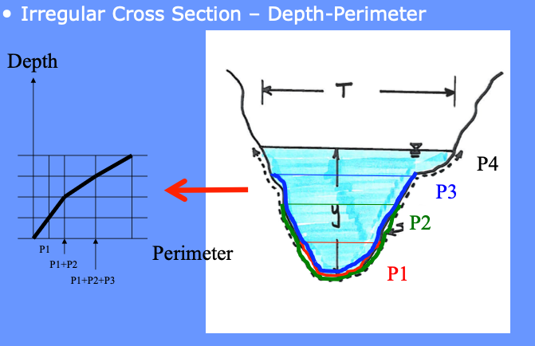
The flow direction also matters, especially in tidally influenced domains. The global direction convention is “looking downstream.” In coastal areas downstream is from land to ocean.
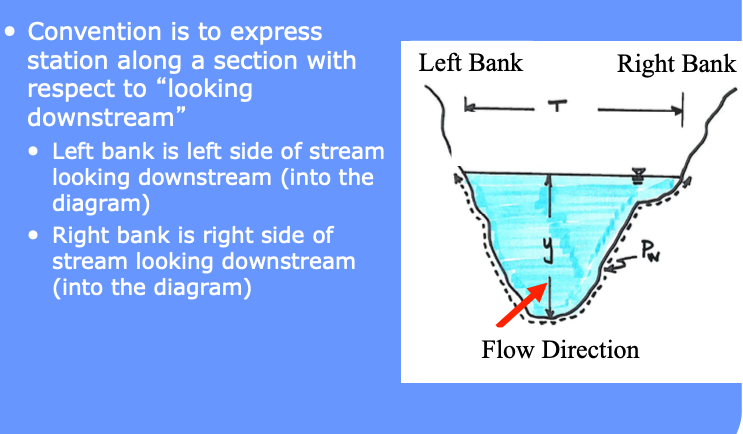
Computational Workflow#
A known inflow hydrograph and initial storage condition is propagated forward in time to estimate the outflow hydrograph.
The choice of \(\Delta t\) value should be made so that it is smaller than the travel time in the reach at the largest likely flow and smaller than about 1/5 the time to peak of the inflow hydrograph
HMS is supposed to manage this issue internally, if we roll-our-own, need to be cognizant of this important requirement for numerical stability.
Illustrative Example#
Consider a channel that is 2500 feet long, with slope of 0.09%, clean sides with straight banks and no rifts or deep pools. Manning’s \(n\) is 0.030.
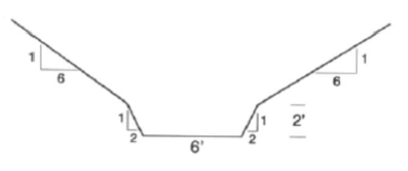
The inflow hydrograph is triangular with a time base of 3 hours, and time-to-peak of 1 hour. The peak inflow rate is 360 cfs.
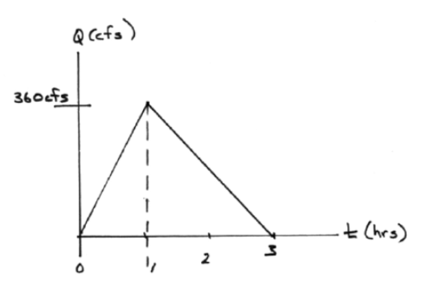
The computational “configuration” is input hydrograph => channel routing => output hydrograph.
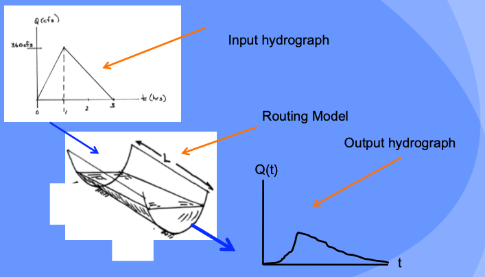
Analyst Tasks:
Build a depth-storage table
Build a depth-outflow table
From 0-6 feet deep use Manning’s equation in variable-geometry conduit
Build the input hydrograph (make the picture into numb3rs).
Build the routing table (apply the reach mass balance)
Depth-Storage Table#
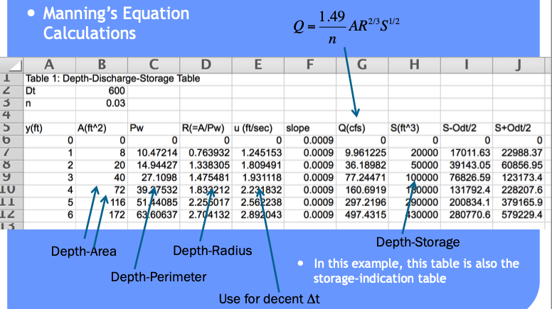
Input Hydrograph Table#
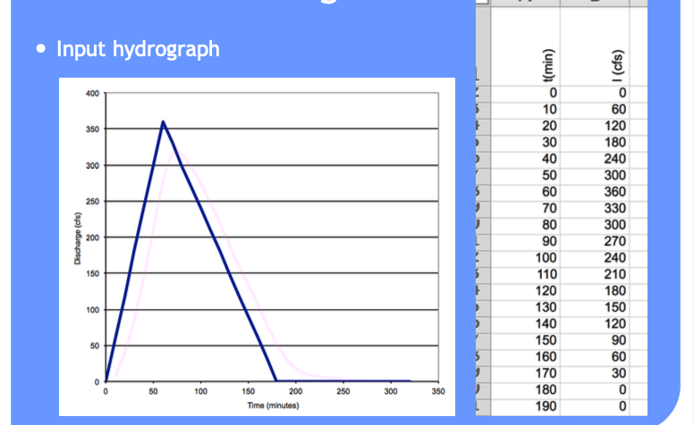
Storage-Discharge Table#
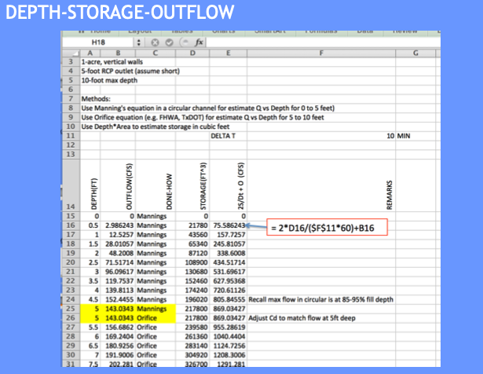
Routing Table (Reach Mass Balance)#
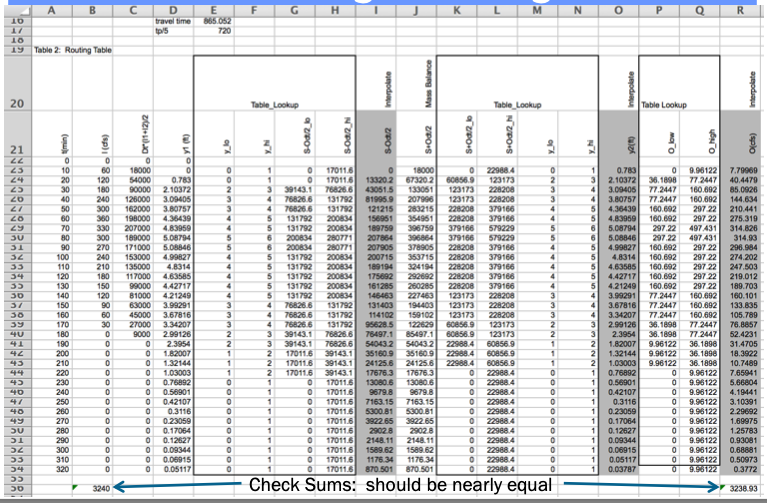
Usuall useful to plot and interpret results
Results and Interpretation#
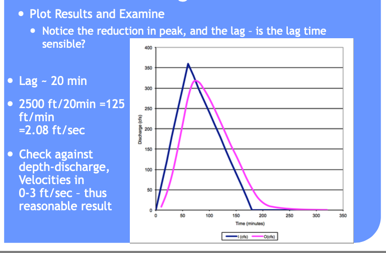
Spreadsheet#
The spreadsheet used to construct the example above is Stream_Storage_Routing.xls (Uses MACROS, must open using Excel for example to work)
HEC-HMS Approach#
Here is the same example using HEC-HMS to manage the data and computations.
Create a Project
Basin model has a:
source (entered as a time series)
reach element
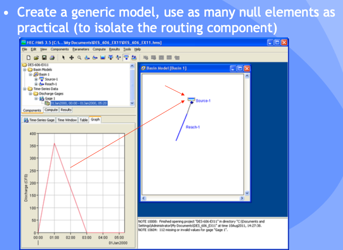
Supply Storage-Discharge Table
Entered as Paired-Data element
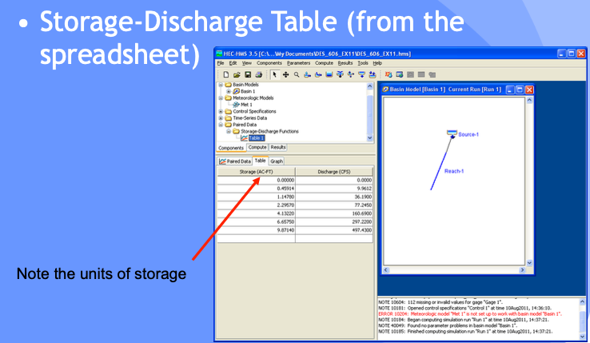
Supply a Meterological Model
Required for simulation, but a null element
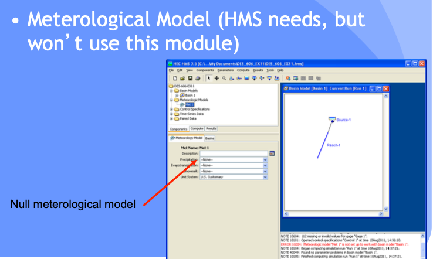
Supply Control Specifications
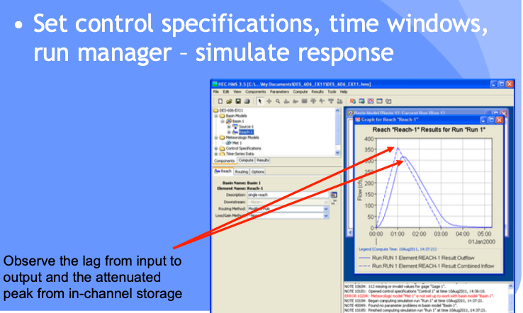
Interpret Results
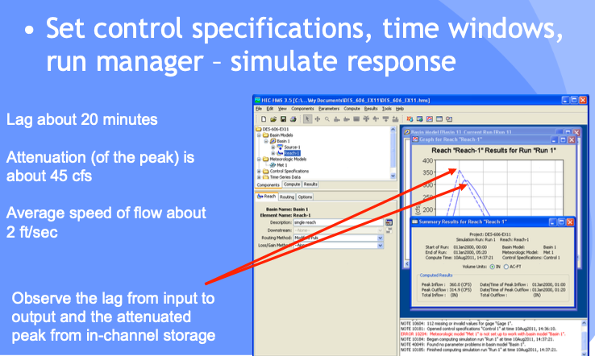
Project File#
Muskingum Routing#
A method that includes consideration of wedge storage is Muskingum routing (Named after the Muskingum River in Ohio.
Muskingum routing is a storage-routing technique that is used to:
translate and attenuate hydrographs in natural and engineered channels
avoids the added complexity of hydraulic routing.
The method is appropriate for a stream reach that has approximately constant geometric properties.
Theory#
At the upstream end, the inflow and storage are assumed to be related to depth by power-law models
\(I= a y_u^n\)
\(S_I = b y_u^m\)
At the downstream end, the outflow and storage are also assumed to be related to depth by power-law models
\(O= a y_d^n\)
\(S_O = b y_d^m\)
The depths at each end are rewritten in terms of the power law constants and the inflows
\(S_I=\frac{bI^{m/n}}{a^{m/n}}\)
\(S_O=\frac{bO^{m/n}}{a^{m/n}}\)
Then one conjectures that the storage within the reach is some weighted combination of the section storage at each end (weighted average)
\(S = wS_I + (1-w)S_O\)
The weight, \(w\), ranges between 0 and 0.5.
When w = 0, the storage in the reach is entirely explained at the outlet end (like a level pool)
When w = 0.5, the storage is an arithmetic mean of the section storage at each end.
Generally the variables from the power law models are substituted
\(K=\frac{b}{a^{m/n}}\), and
\(z = m/n\)
And the routing model is expressed as
\(S=K[wI^z + (1-w)O^z\)
if \(z\) is assumed to be unity the expression results in the form
\(S=K[wI + (1-w)O]\)
For most natural channels \(w\) ranges between 0.1 and 0.3 and are usually determined by calibration studies
Muskingum-Cunge further refines the model to relate the values of the weights to channel geometry, slope, and resistance features. At this level of abstraction (Muskingum-Cunge) the model is nearly a hydraulic model.
Note
Muskingum-Cunge routing and the kinematic wave method are nearly identical because both techniques focus on approximating how flood waves propagate through a stream or channel, with a primary emphasis on downstream flow movement rather than complex backwater effects.
Flow Assumption: Both methods are based on the assumption that the dominant flow process is advective transport, meaning the flow is driven primarily by the slope of the channel and the velocity of the water, with minimal consideration for upstream effects or changes in flow depth (e.g., backwater effects). This is why both methods work well for gradually varied flows in channels with relatively mild slopes.
Linearization of Equations: Both Muskingum-Cunge and kinematic wave methods simplify the Saint-Venant equations (full dynamic wave equations). The kinematic wave neglects the inertia and pressure terms, reducing the complexity of the momentum equation to focus on gravity-driven flow. Similarly, Muskingum-Cunge introduces a finite difference approach to linearize and stabilize the continuity and momentum equations, which approximates flow movement without the need for solving the full dynamic equations.
Numerical Similarities: The Muskingum-Cunge method uses a numerical scheme that results in flow propagation behavior closely resembling the kinematic wave model when applied to simple flow scenarios (such as uniform or steady-state conditions). The key difference is that Muskingum-Cunge includes a diffusive term, providing a slight smoothing of the flow, but under many conditions, this effect is minimal, making the two methods yield almost identical results.
Thus, both methods are used for streamflow routing in gradually varied flows where downstream propagation of flood waves dominates, and flow variations over time are smooth and predictable. The slight difference lies in Muskingum-Cunge’s ability to account for limited diffusion, but this is often negligible in practical applications, making the two approaches nearly interchangeable.
HEC-HMS Approach#
Here is the same example using HEC-HMS and Muskingum-Cunge method of routing.
From hydrologic literature (Haan, Barfield, Hayes) a rule of thumb for estimating w and K is
Estimate celerity, \(c\), from bankful discharge (or deepest discharge value)
Estimate K as ratio of reach length to celerity (units of time, essentially a reach travel time)
Estimate weight (w) as \(w=\frac{1}{2}(1-\frac{q_0}{S_)cL})\)
Estimate Celerity
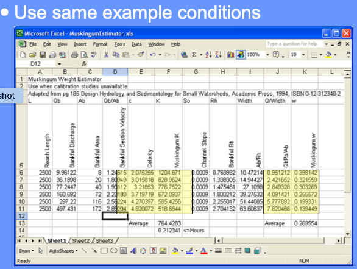
Apply estimates in Muskingum Method
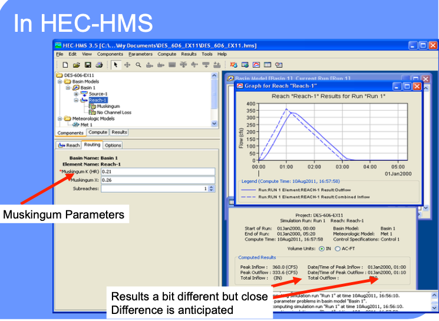
Explore Different Settings
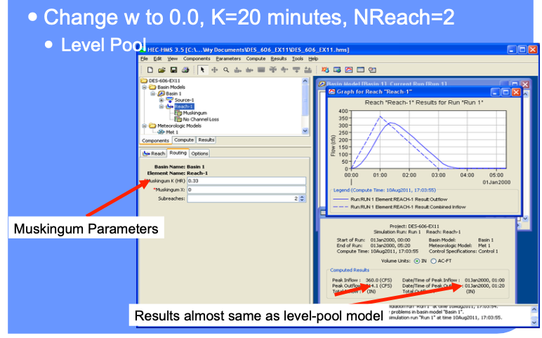
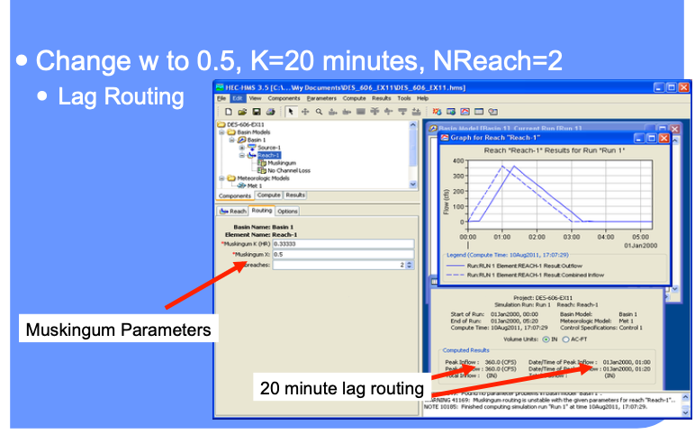
Muskingum-Cunge#
Described in Chow, V.T., Maidment,D.M., and Mays, L.W. (1998) Applied Hydrology, McGraw Hill, pp. 302-304.
Data needs are:
Cross section geometry (as paired-data)
Manning’s n in channel, left and right overbank
Slope
Reach length
Number of reaches (the program divides the reaches into sub-reaches for computation)
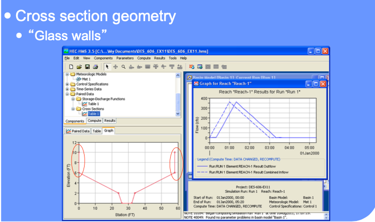
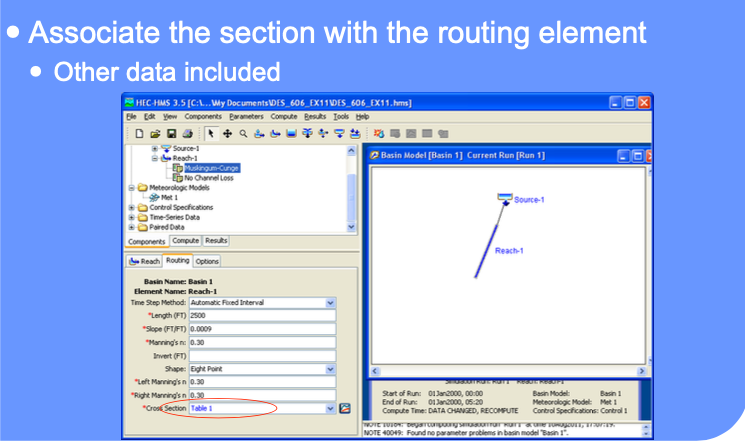
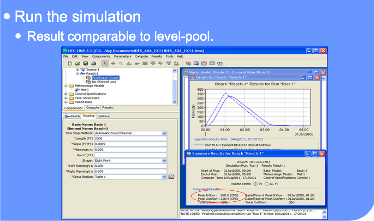
Summary#
Examined routing using:
Lag
Level pool routing (Puls)
Muskingum
Muskingum-Cunge
All require external data preparation
Note
You should apply Muskingum-Cunge methods for the Hardin Branch study (the others will work fine, but you have the needed topography to approximate channel cross sections to apply Muskingum-Cunge)